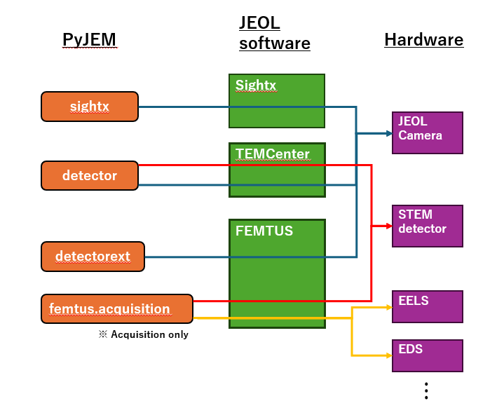
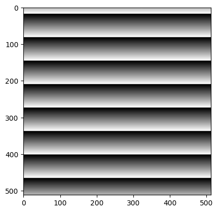
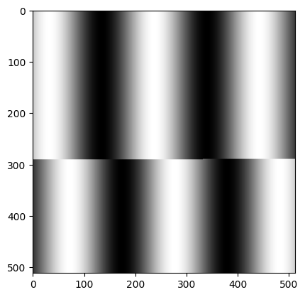

About detector/camera control packages¶
There are 4 packages available for controlling detectors: detector, detectorext, sightx, and femtus.acquisition.
Select the appropriate package based on your system configuration.
{kind=link}

Package summary¶
Package |
Target |
Configuration |
|---|---|---|
|
Cameras and detectors (general) |
FEMTUS not configured |
|
JEOL cameras |
FEMTUS configured |
|
STEM detectors |
FEMTUS configured |
|
Cameras controlled by SightX |
SightX configured on the PC |
How to use this page¶
For
detector,detectorext, andsightx: follow the tutorial steps in Section A below.If FEMTUS is configured and you acquire STEM detector / EDS / EELS images: follow Section B below.
Note
Because FEMTUS does not support this feature, images captured with detectorext are not saved to the FEMTUS worksheet.
Tip
You can verify that each service is reachable in Step 2 of check connection.
Section A: detector, detectorext, sightx¶
This section describes a standard camera control workflow.
For
detector, use the sample code as-is.For
detectorextandsightx, use the same flow and replace the imported package/module and constructor according to each API.
0. Import package¶
Import one of the target packages.
detector:from PyJEM import detectordetectorext:from PyJEM import detectorextsightx:from PyJEM import sightxOffline test example:
from PyJEM.offline import detector
1# Example for detector (Ver. 1.3.0)
2from PyJEM import detector
3# from PyJEM import detectorext
4# from PyJEM import sightx
5# from PyJEM.offline import detector # offline
1. Get usable detector/camera names¶
Retrieve detector/camera names that can be controlled by this package.
1detector.get_attached_detector()
['HAADF',
'LAADF',
'BF',
'None',
'SAAF CH1',
'SAAF CH2',
'SAAF CH3',
'SAAF CH4']
2. Get detector/camera information¶
Set the detector/camera name in
detector.Detector("camera/detector").Get current settings with
get_detectorsetting().
1haadf = detector.Detector('HAADF') # example for HAADF detector; use the appropriate name for your detector
2haadf.get_detectorsetting()
{'AreaModeImagingArea': {'Top': 128, 'Left': 128, 'Width': 256, 'Height': 256},
'LiveStatus': 'LiveStopped',
'AreaModeImagingAreaMaximum': '4096, 4096',
'AreaModeImagingAreaMinimum': '8, 8',
'CanBinning': False,
'CanGain': True,
'CanOffset': True,
'ExposureTime': [],
'ExposureTimeIndex': 159,
'ExposureTimeIndexMaximum': 65533,
'ExposureTimeIndexMinimum': 31,
'ExposureTimeString': '3.33',
'ExposureTimeValue': 3.3333333333333335,
'frameIntegration': 20,
'frameIntegrationMaximum': 255,
'frameIntegrationMinimum': 1,
'FrameRate': [],
'GainIndex': 0,
'GainIndexMaximum': 4095,
'GainIndexMinimum': 0,
'HorizontalLineNo': 1,
'horizontalLineNoMaximum': 512,
'horizontalLineNoMinimum': 1,
'ImagingArea': {'X': 0, 'Y': 0, 'Width': 512, 'Height': 512},
'ImagingAreaMaximum': '4096, 4096',
'ImagingAreaMinimum': '4, 1',
'MultiDetectorMode': 2,
'OffsetIndex': 4095,
'OffsetIndexMaximum': 4095,
'OffsetIndexMinimum': 0,
'OutputImageInformation': {'DataBits': 16,
'EffectBits': 16,
'ImageSize': {'Width': 512, 'Height': 512},
'PixelsPerMeter': {'Horizontal': 2560, 'Vertical': 2560}},
'scanMode': 0,
'ScanRotation': 0.0,
'scanRotationMaximum': 360.0,
'scanRotationMinimum': 0.0,
'scanRotationStep': 0.1,
'SpotPosition': {'X': 0, 'Y': 0},
'spotPositionMaximum': '4095, 4095',
'spotPositionMinimum': '0, 0',
'SyncMode': 0,
'Version': '1.00',
'ScanFrameTime': {'FrameTime50Hz': 1337.3066666666668,
'FrameTime60Hz': 1337.3066666666668,
'LineTime50Hz': 2.586666666666667,
'LineTime60Hz': 2.586666666666667}}
3. Change detector/camera setting (example: gain)¶
You can update detector/camera settings such as gain index.
Note
Available setting functions may differ depending on the package you use. Please check each API document for details:
detector, detectorext, sightx.
1haadf.set_gainindex(1234)
{'GainIndex': 1234}
4. Capture image with selected detector/camera¶
Capture and display an image from the selected detector/camera.
1file=haadf.snapshot("jpg", save=True, show=True)

Section B: femtus.acquisition¶
This tutorial is based on the femtus.acquisition TODO example and explains each step.
Prerequisites¶
The Scan Area is configured in the FEMTUS UI.
Services required for your workflow are running.
Use this section when FEMTUS is configured and you acquire STEM / EDS / EELS data.
1# 0) Import packages and confirm connectivity
2from PyJEM.femtus import acquisition
1) Check available detectors¶
First, confirm which detector names are available for acquisition.
1detectors = acquisition.get_detectors()
2detectors
{'Detectors': ['EDS', 'EELS', 'SAAF', 'Image', '4DSTEM'], 'Version': '1.0.0'}
2) Check acquisition status¶
Check whether acquisition is already running and inspect current status.
1status = acquisition.get_status()
2status
{'Status': {'AcquisitionID': '00000000-0000-0000-0000-000000000000',
'AcquisitionRunning': False,
'SweepCount': 0,
'ElapsedSeconds': 0},
'Version': '1.0.0'}
3) Get settings and create a payload¶
Get current settings from FEMTUS, then edit one setting dictionary and use it as the start() payload.
Example below updates detector list, region size, and dwell time.
Note
If no imaging area is selected in the FEMTUS UI, get_settings() cannot retrieve the settings.
If nothing is configured, you need to refer to the API page and create the parameters manually.
1result = acquisition.get_settings()
2setting = result["Settings"][0]
3
4# Example customization
5setting["Detectors"] = ["Image"]
6setting["Region"]["Width"] = 128
7setting["Region"]["Height"] = 128
8setting["Conditions"]["DwellTime"] = 100
9
10setting
{'Id': '08274fde-dd82-44c0-906c-d045552c6a43',
'Detectors': ['Image'],
'Region': {'Left': 229,
'Top': 206,
'Width': 128,
'Height': 128,
'Points': None,
'Shape': 'Rectangle'},
'Conditions': {'DwellTime': 100,
'PixelResolution': 1,
'IsPlayback': False,
'CollectionMode': {'Mode': 'Sweep', 'Count': 1}},
'DriftCorrection': {'Type': 'None', 'Interval': 1, 'CorrectionRegion': None}}
4) Start acquisition¶
Run start(setting) with the payload created above.
This call starts acquisition immediately.
Execute only when your hardware and scan area are ready.
1start_status = acquisition.start(setting)
2start_status
{'AcquisitionID': 'f0e78d07-01e2-405a-bea7-ea4031fbe0db',
'WorksheetID': '64f4b900-1c58-41f7-8062-08e24cc41d47',
'ReferenceDetector': 'VP_ADF_1',
'Version': '1.0.0'}
4.1) Stop acquisition¶
After starting acquisition, check status and stop when needed.
1acquisition.stop()
{'Result': 'OK', 'Version': '1.0.0'}
5) Get acquisition result¶
Use get_acquisition_result to retrieve information for the acquired data.
1acquisition_result = acquisition.get_acquisition_result(start_status.get("AcquisitionID"))
2acquisition_result
{'Results': [{'Id': '050000f2-0944-4e2a-9e00-c5bc4b73642f',
'DataType': 'STEM_Survey'},
{'Id': '6f0ffc15-2f69-40ee-bcd0-8f61e4b0ccdb',
'DataType': 'STEM_HAADF_SeleArea'}]}
6) How to get image information from acquisition results¶
Use the following steps to get image information from acquisition_result.
Extract the data ID from
acquisition_result["Results"][0]["Id"].Call
worksheet.get_data_set(data_id)to retrieve dataset information.Read
ClumpandDataBytesindataset, then proceed to retrieve and decode image bytes.
1from PyJEM.femtus import worksheet
2dataset = worksheet.get_data_set(acquisition_result["Results"][0]["Id"])
3dataset
{'Id': '050000f2-0944-4e2a-9e00-c5bc4b73642f',
'IsSelected': False,
'Clump': {'Id': '4456ca54-c67f-4942-8953-311de9fa7af7',
'Information': {'Header': {'Version': '1.0.0',
'ClumpId': '4456ca54-c67f-4942-8953-311de9fa7af7',
'DataType': 'STEM_Survey',
'DataSubType': '',
'DetectorType': 2,
'ClumpType': 'Clump',
'Name': ''},
'DataInformation': {'TypeInfo': 0,
'DataBytes': 2,
'Channel': 1,
'DimensionLength': 2,
'Dimensions': [512, 512],
'ChannelType': '',
'IsRangeFixed': False,
'MinimumPossibleIntensity': -1.7976931348623157e+308,
'MaximumPossibleIntensity': 1.7976931348623157e+308},
'MeasurementInformation': {'CalibrationCoefficients': [{'Scale': 14.6875,
'Offset': 0,
'Unit': 'Nanometer'},
{'Scale': 14.697265625, 'Offset': 0, 'Unit': 'Nanometer'}]},
'Tags': {'General': {'Manufacturer': 'JEOL Ltd.',
'Comment': '',
'Specimen': 'Specimen',
'Operator': 'User',
'DateTime': '20260402105656758',
'ProductName': 'FEMTUS',
'ProductVersion': '2.0.0',
'UpdateDateTime': '20260402105656758',
'UpdateProductName': 'FEMTUS',
'UpdateProductVersion': '2.0.0',
'AnalysisId': 'f4355252-cdf5-49c8-9858-f1d0fb5761b9',
'AnalysisDateTime': '20260402164541555',
'AcquisitionId': 'f0e78d07-01e2-405a-bea7-ea4031fbe0db',
'AcquisitionDateTime': '20260402164541555',
'Instrument': 'JEM-ARM200F'},
'HT': {'GunType': 'Cfeg', 'AccelerationVoltage': 200000, 'EnergyShift': 0},
'EOS': {'OperationMode': 'Scanning',
'SpotSizeNumber': 0,
'ConvergenceAngleAlphaNumber': 0,
'ImageFormingMode': 'MAG',
'RockingAngle': 0,
'MagnificationValue': 20000,
'MagnificationString': 'x20000',
'CameraLength': 15,
'CameraLengthString': '0.015m'},
'Stage': {'X': {'Position': 0},
'Y': {'Position': 0},
'Z': {'Position': 0},
'TX': {'Position': 0},
'TY': {'Position': 0},
'TZ': {'Position': 0},
'PX': {'Position': 0},
'PY': {'Position': 0},
'PZ': {'Position': 0}},
'ScanGenerator': {'AreaModeImagingArea': {'X': 0,
'Y': 0,
'Width': 512,
'Height': 512},
'SpotPosition': {'X': 0, 'Y': 0},
'ScanMode': 'Full',
'PresetMode': 'Search',
'ExposureTimeValue': 5,
'FrameIntegration': 1,
'ImagingArea': {'X': 0, 'Y': 0, 'Width': 512, 'Height': 512},
'ScanRotation': 0},
'Detector': {'DetectorKind': 'HAADF',
'Manufacturer': 'Manufacture',
'ModelCode': 'ModelCode',
'ModelDisplayName': 'DisplayName',
'GainIndex': 50,
'OffsetIndex': 50,
'PixelsPerMeter': {'Horizontal': 3404.255319148936,
'Vertical': 3401.9933554817276}}}},
'ViewInformation': {'Header': {'Version': '2.0.0',
'ClumpId': '4456ca54-c67f-4942-8953-311de9fa7af7'},
'Tags': {}}}}
1img = worksheet.get_clump_num_array_accessor(dataset["Clump"]["Id"])
2type(img), len(img)
(bytes, 524288)
7) Convert byte data to an image and display¶
get_clump_num_array_accessor returns raw byte data.
In the next cell, convert the bytes to a NumPy array, reshape to a 2D image, and display it with matplotlib.
1import numpy as np
2import matplotlib.pyplot as plt
3
4# get_clump_num_array_accessor returns raw bytes.
5# Select dtype from DataBytes when available: 1 -> uint8, 2 -> uint16.
6data_bytes = dataset["Clump"]["Information"]["DataInformation"]["DataBytes"]
7size = dataset["Clump"]["Information"]["DataInformation"]["Dimensions"]
8
9if data_bytes == 1:
10 dtype = np.uint8
11elif data_bytes == 2:
12 dtype = np.uint16
13else:
14 # Fallback when DataBytes is unavailable in the returned dataset structure.
15 dtype = np.uint16 if (len(img) % 2 == 0) else np.uint8
16
17arr = np.frombuffer(img, dtype=dtype)
18if size[0] * size[1] != arr.size:
19 raise ValueError(f"Cannot infer square image shape from element count: {arr.size}")
20
21img_array = arr.reshape(size[0], size[1])
22plt.imshow(img_array, cmap="gray")
<matplotlib.image.AxesImage at 0x2a5596e24a0>
